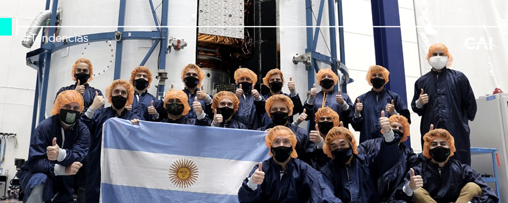

Tecnologia Satelital
Considerado estratégico en los lineamientos de la científico tecnológica nacional, el sector satelital alcanzó importantes resultados en distintos proyectos relacionados a la generación de capacidades para el desarrollo y la producción de partes nacionales. El desarrollo de baterías de vuelo www.google.com como sistemas de almacenamiento de energía es considerado una parte relevante en la fabricación de satélites. En este marco, el proyecto consistió en desarrollar una batería de litio de uso espacial que, con un peso de 5 kg, puede ofrecer prestaciones similares a las baterías de 22 kg que lleva el satélite SAC-C.
 Link al portal de CAI